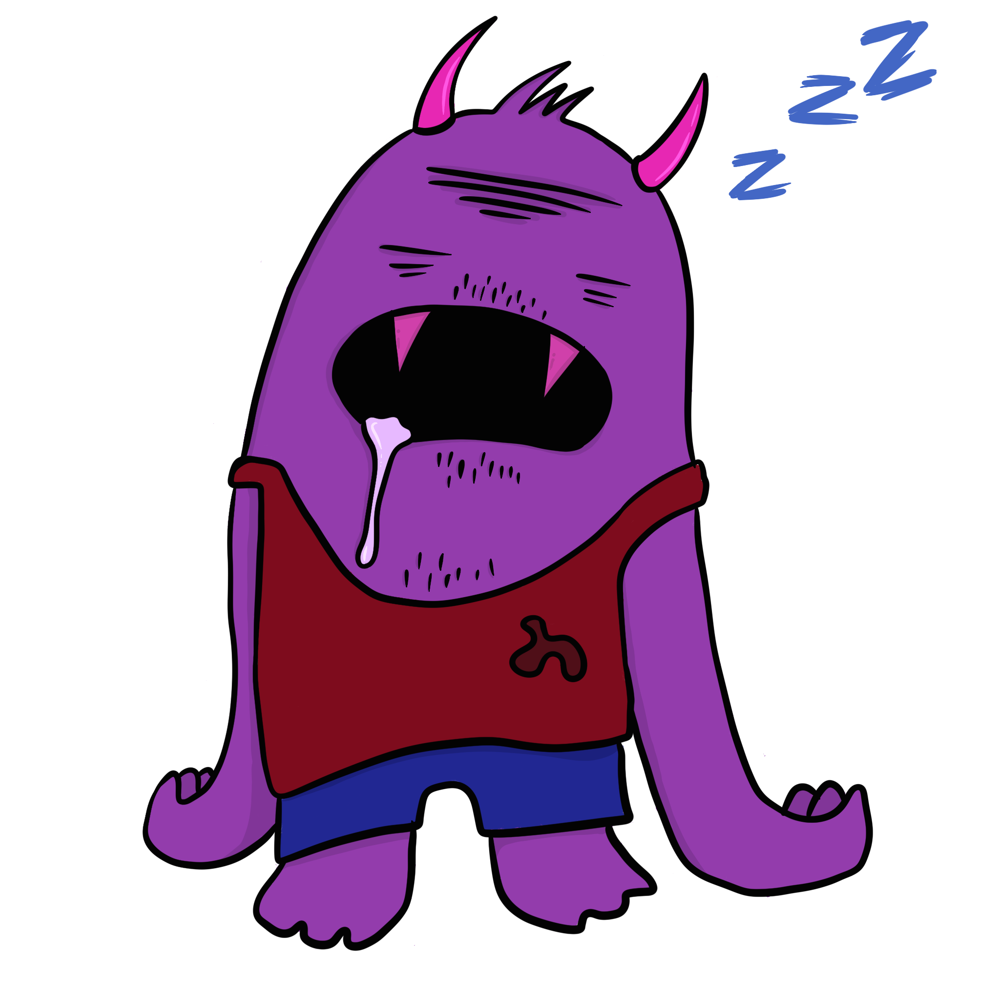
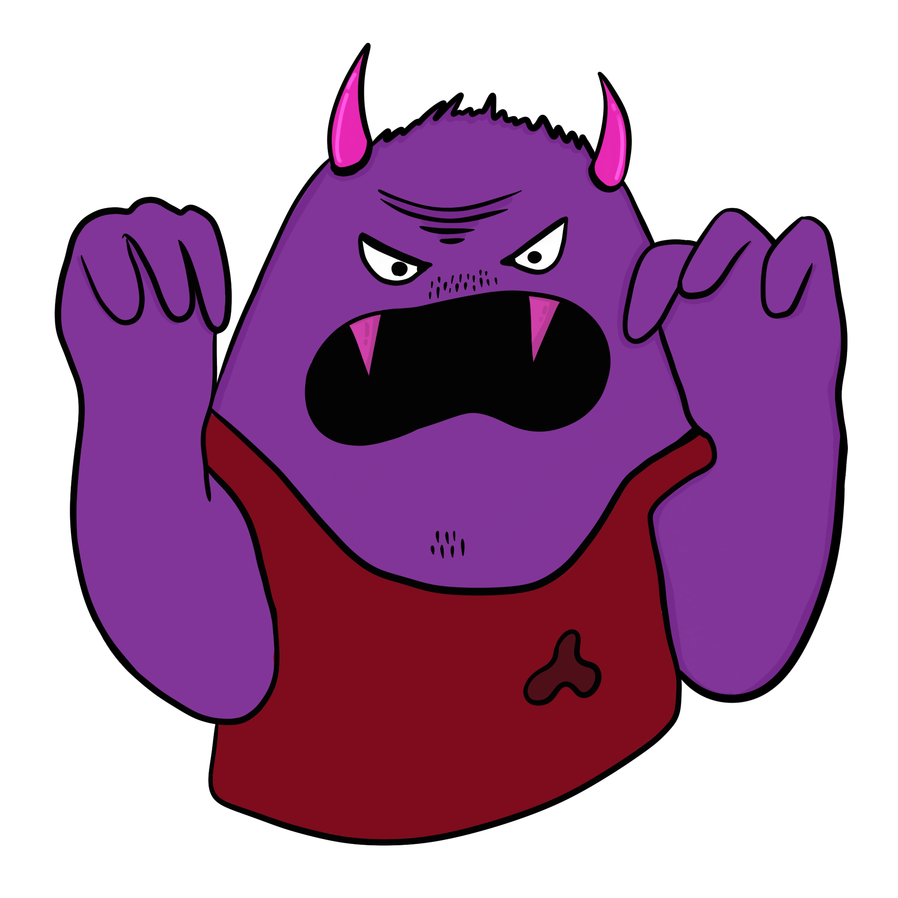
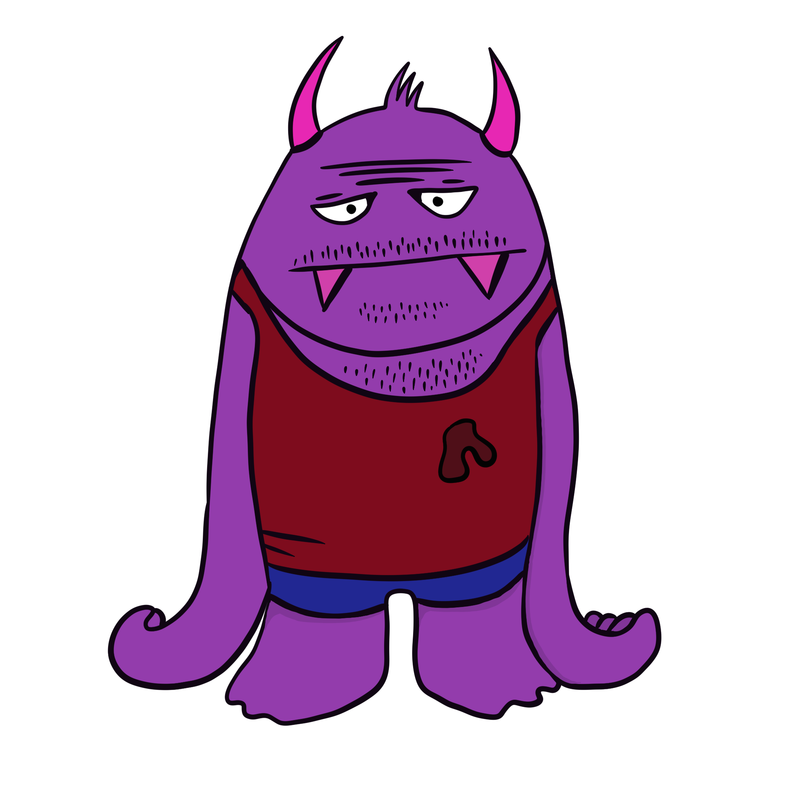
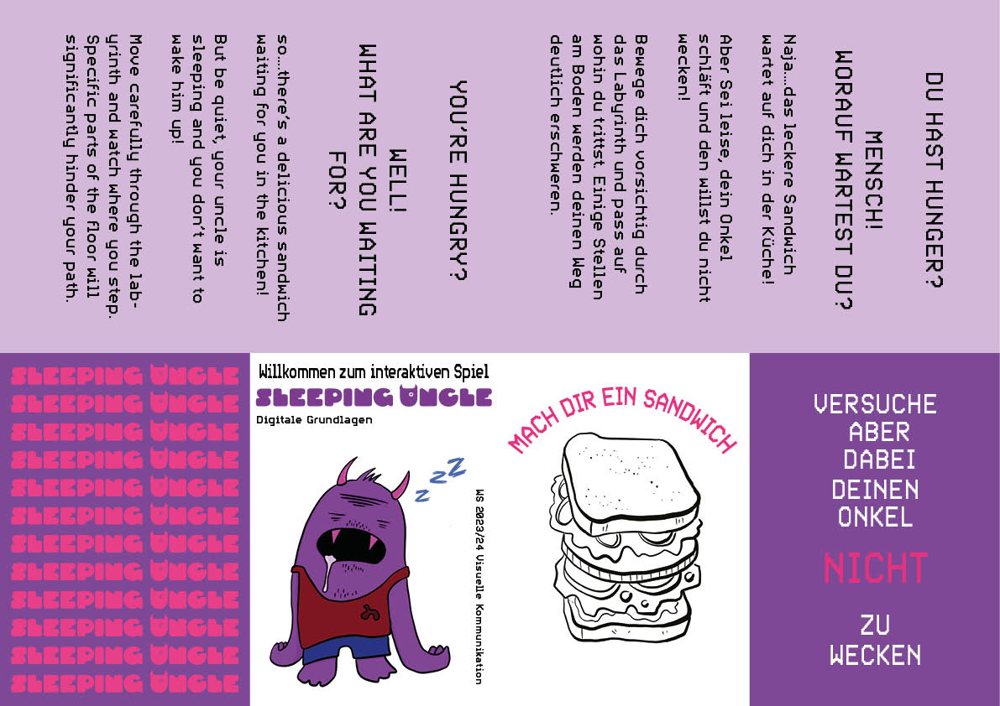
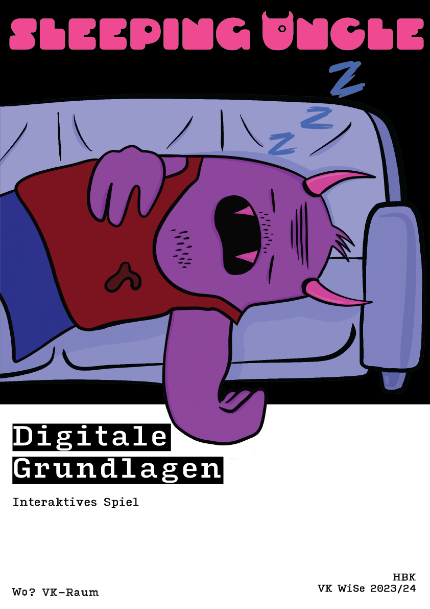

SLEEPING UNCLE
THIS PROJECT WAS OUR FINAL ASSIGNMENT. IT'S AN INTERACTIVE GAME ABOUT A PERSON WALKING THROUGH A CORRIDOR WHO MUSTN'T WAKE UP A MONSTER. THE PERSON'S TASK IS ALSO TO MAKE A SANDWICH IN THE MIDDLE OF THE NIGHT.
WE WERE DIVIDED INTO GROUPS, EACH RESPONSIBLE FOR A PARTICULAR PART. I DECIDED TO FOCUS ON WHAT I KNOW BEST AND CAN CREATE, WHICH IS GRAPHIC DESIGN. OUR GROUP WORKED ON VISUALS AND ANIMATIONS FOR THE GAME. OUR GRUMPY, PURPLE MONSTER UNCLE TURNED OUT REALLY COOL. ADDITIONALLY, WE CREATED POSTERS AND FLYERS TO PROMOTE THE GAME.



FLAYER WAS DESIGNED TO FOLD IN A COMPACT BROCHURE. I WORKED IN INDESIGN AND ILLUSTRATOR, SIZE OF A FLAYER, WHEN FOALDED IS A6, WHILE THE POSTER IS A3.

